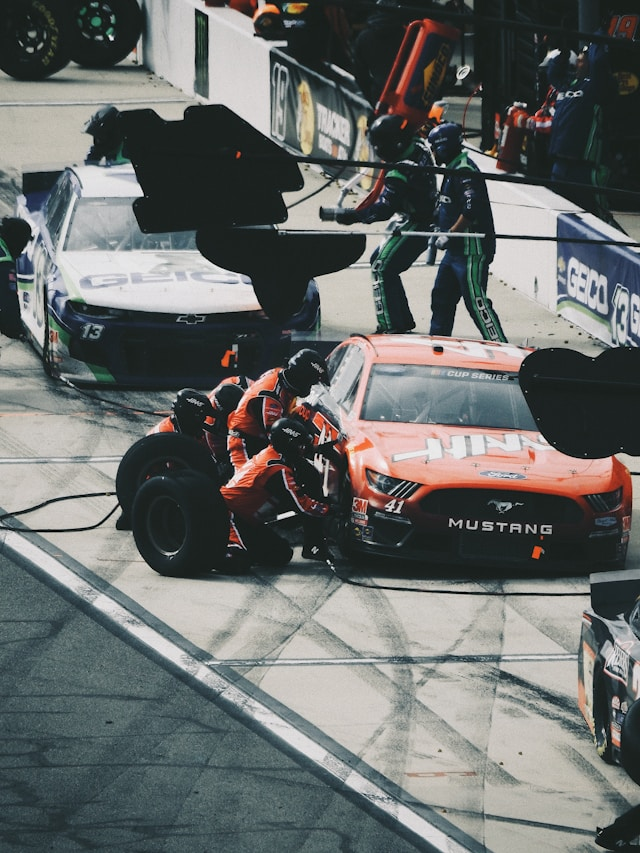
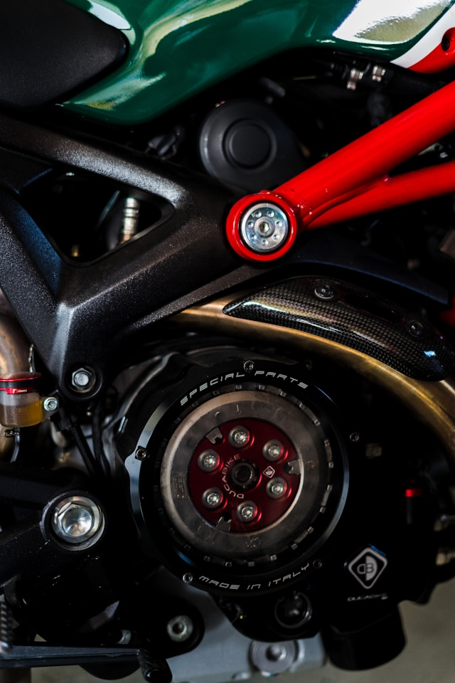
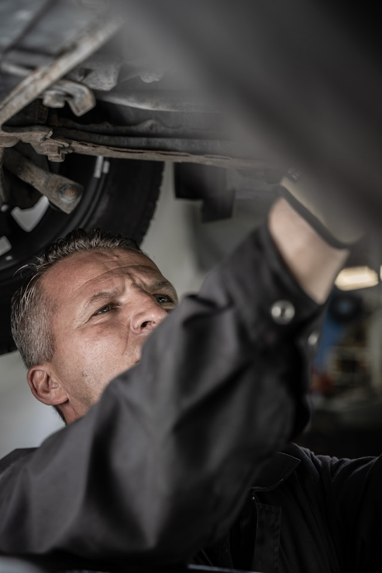
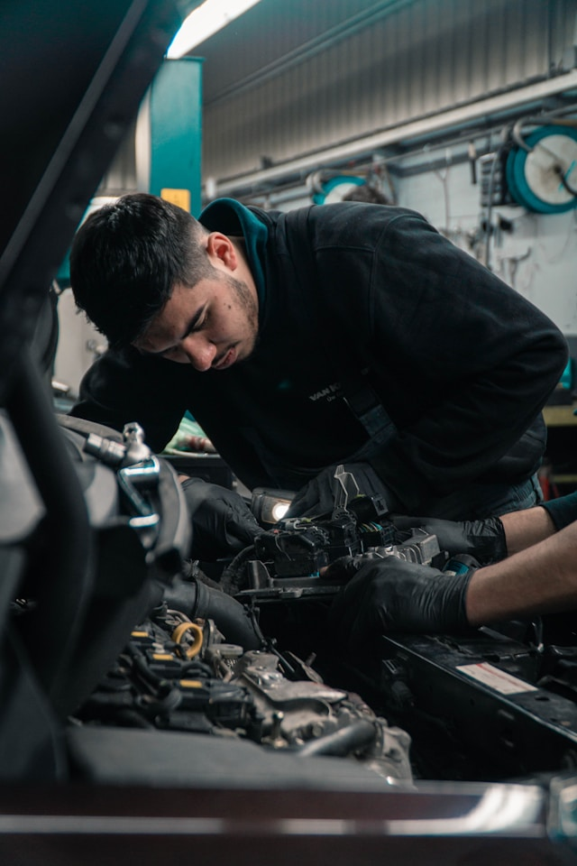
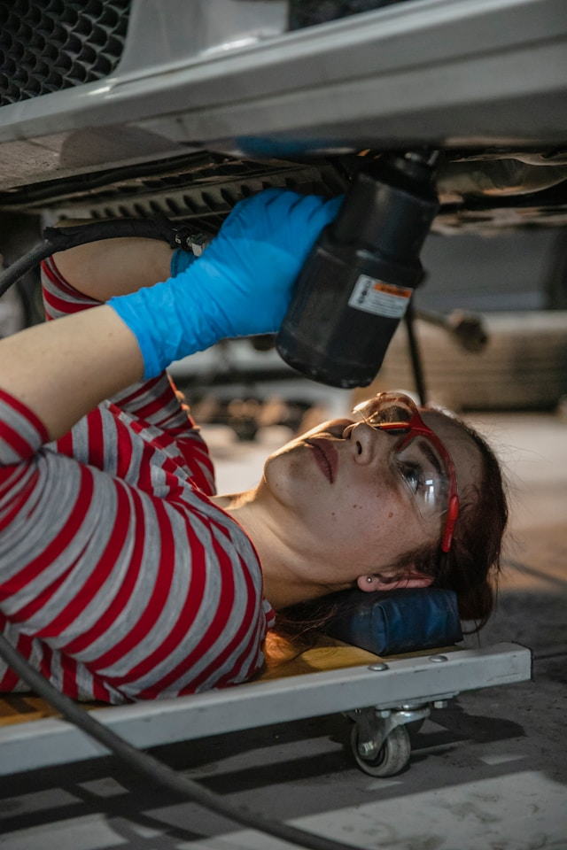
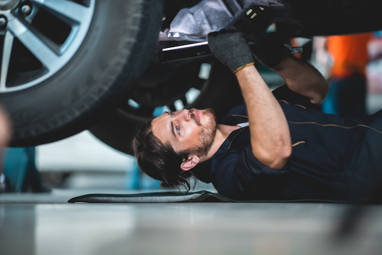
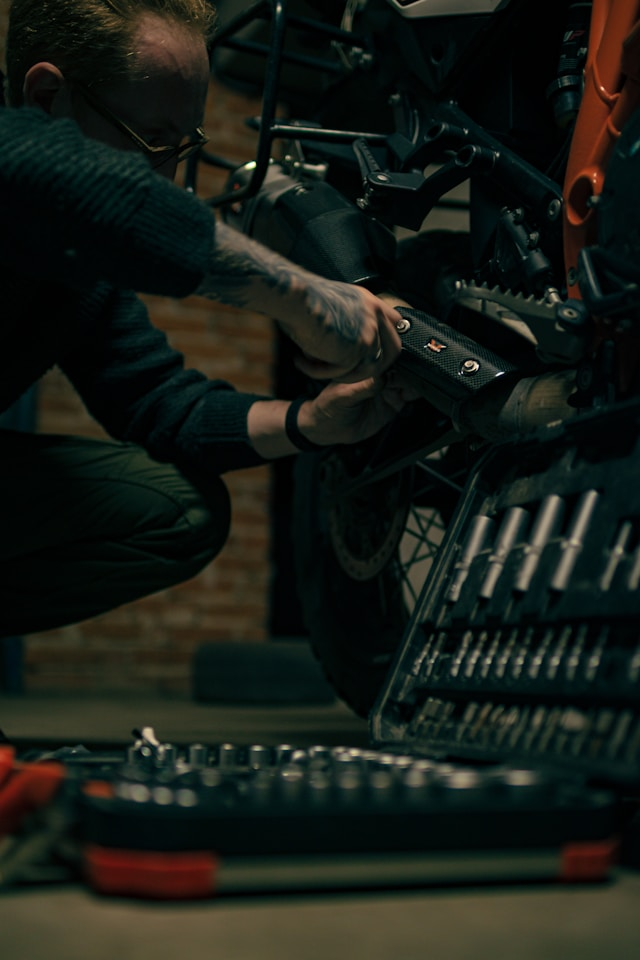

Jesteśmy zespołem pasjonatów motoryzacji, którzy od zawsze z
kluczem w ręku naprawiają i ulepszają samochody. Nasze wieloletnie doświadczenie obejmuje
międzynarodowe projekty oraz pracę w pit-stopach F1, co daje nam pewność, że poradzimy sobie
z każdym wyzwaniem. Posiadamy międzynarodowe certyfikaty i szkolenia, a naszą siłą jest
połączenie pasji z profesjonalizmem. Zawsze stawiamy na jakość, innowacyjność oraz
indywidualne podejście do każdego klienta.

Nasza historia
Nasza droga zaczęła się w jednym z najbardziej ekscytujących i
wymagających środowisk motoryzacyjnych – w pit-stopach Formuły 1, gdzie nasze umiejętności
zostały wystawione na próbę w najtrudniejszych warunkach. Tam się poznaliśmy, a z czasem
zrodziła się wizja stworzenia czegoś wyjątkowego. Chcieliśmy połączyć doświadczenie z torów
wyścigowych z indywidualnym podejściem do klienta do klienta i wprowadzić nowoczesny serwis
samochodowy, który wyróżnia się jakością, szybkością oraz bezpieczeństwem.

Dlaczego my?
W naszym serwisie łączymy doświadczenie zdobyte w F1 z
indywidualnym podejściem do każdego klienta. Dbamy o każdy szczegół, bo dla nas
najważniejsze jest, by Twój samochód działał jak nowy. Oferujemy kompleksową pomoc, szybką
diagnostykę i naprawy, a także dbamy o to, byś czuł się komfortowo i bezpiecznie. Co więcej,
stawiamy na ekologię – naprawiamy również samochody elektryczne, bo wierzymy w zrównoważoną
przyszłość motoryzacji.Odwiedź nas a sam się przekonasz.
SpeedFix Garage
Zespół Pasjonatów, Gotowych do Działania
Nasz Team
Jakub Mazur

Jakub Mazur
Jakub to szef serwisu i lider naszej ekipy, który przynosi ze
sobą ogromne doświadczenie. Były członek ekipy techników BMW w wyścigach F1 oraz
inżynier projektujący bolidy BMW. Jego pasja do motoryzacji, połączona z wiedzą
techniczną, sprawia, że nasz serwis oferuje usługi na najwyższym poziomie. Zawsze stawia
na innowacje i doskonałość, a jego decyzje kierują naszym serwisem ku ciągłemu rozwojowi
i sukcesowi.
Marek Pawlak

Marek Pawlak
Marek to były członek ekipy techników Ferrari w wyścigach F1,
a także specjalista od silników samochodowych i pojazdów elektrycznych. Jego
doświadczenie w pracy z jednymi z najlepszych maszyn na świecie czyni go ekspertem w
swojej dziedzinie. Dba o to, aby każdy samochód w naszym serwisie był naprawiany z
najwyższą precyzją i zgodnie z najnowszymi technologiami, zapewniając doskonałe osiągi i
niezawodność.
Julia Kowalczyk

Julia Kowalczyk
Julia to była technik F1 w zespole BMW, pasjonatka motorów i
ekspertka od samochodów elektrycznych. Z jej wiedzą i doświadczeniem nasz serwis jest
liderem w zakresie nowoczesnych technologii motoryzacyjnych. Julia łączy pasję do
motoryzacji z ogromną precyzją w diagnostyce i naprawach, oferując usługi na najwyższym
poziomie.
Adam Wójcik

Adam Wójcik
Adam to prawdziwy pasjonat wyścigów Nascar oraz były technik
Ferrari w F1, specjalizujący się w zawieszeniu samochodowym. Jego doświadczenie zdobyte
w pracy przy najbardziej wymagających maszynach wyścigowych pozwala mu na dokładną i
szybką diagnostykę każdego pojazdu. Adam dba o to, by każdy samochód, który trafia do
naszego serwisu, był nie tylko sprawny, ale i bezpieczny.
Kamil Szymański

Kamil Szymański
Kamil to pasjonat ścigaczy, były inżynier fabryki koncernu
Honda oraz technik BMW w F1. Specjalizuje się w motorach i tuningowaniu silników,
oferując klientom precyzyjne usługi, które poprawiają wydajność pojazdów. Jego ogromne
doświadczenie w pracy z wyścigowymi maszynami pozwala na doskonałą diagnostykę i
naprawy, które poprawiają osiągi każdego samochodu.